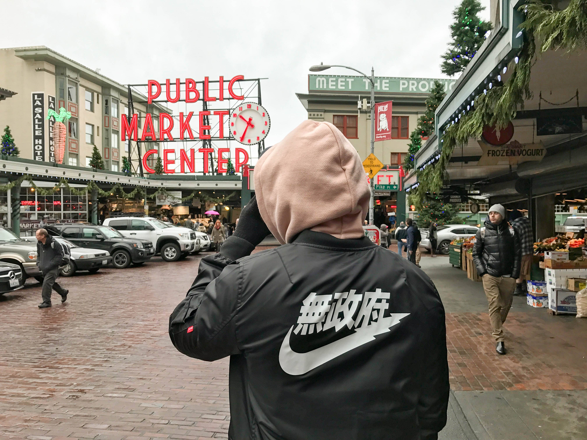
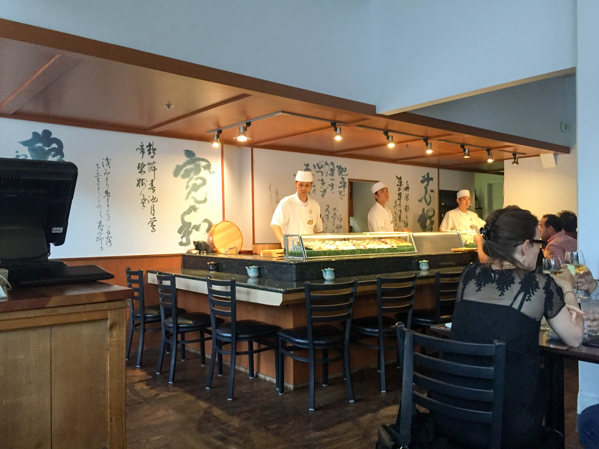
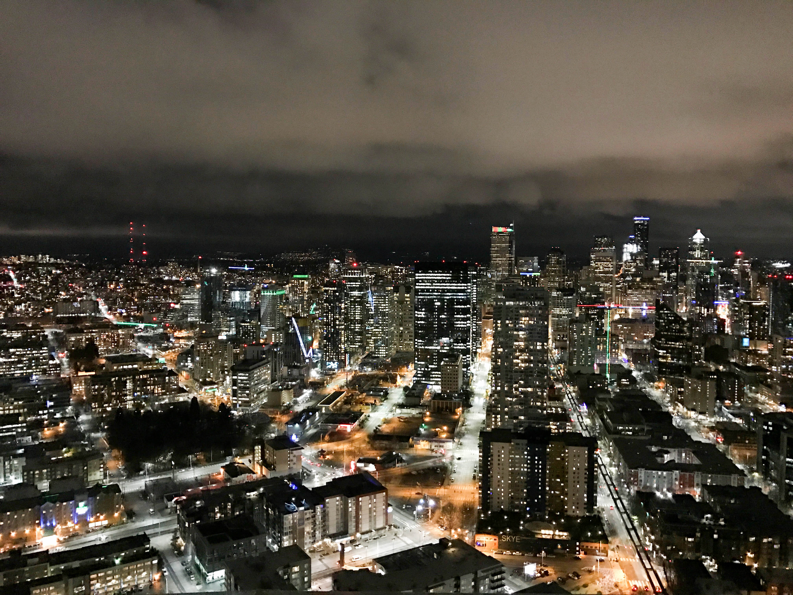
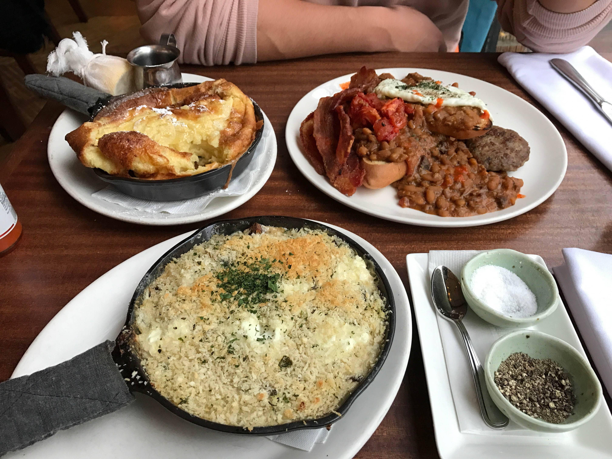

If you know me, Seattle is my happy place. Haven gone five times in the past year, I've experienced this wonderful city throughout all its weather changes. After starting my blog, I decided to document my most recent visit in December with my boyfriend.

Spoiled by the Bay Area weather, I was FREEZING in the 30 degree weather. Thankfully, it had just stopped snowing when we got there and it did not rain for the remainder of our stay. However, nothing stopped us from eating yummy foods all over town. If you've heard of the documentary, Jiro Dreams of Sushi, he has an apprentice who opened a restaurant in Seattle called Shiro's. We had to try this place - and it definitely met our expectations! We made reservations a week beforehand, but if you want to sit on the chef's counter, I would recommend you come half an hour before it opens because there was a line when we got there.

There are many different places where you can see this beautiful city. You can go to Gas Works Park, Kerry Park, or to Space Needle where you can get a lookout view! When you purchase this ticket, you can go for 24 hours - so you can get a view in the morning and at night if you want. I personally love the city lights, so embracing the cold we took some beautiful pictures for about 10 seconds before we ran back to shelter.

I love love love traveling to try different foods. Tilikum Cafe was one of the highlights of my trip - nothing like this yet in the Bay Area! It is an European brunch place and it fills up within 10 minutes of opening. Luckily we got there right when it opened and got a seat right away. The baked eggs (bottom) and the dutch pancake (top left) were a one-of-a-kind dish that I have not seen anywhere in the West Coast yet. Definitely try this place if you are visiting Seattle. It is also right next to the Space Needle and the Chihuly Glass Museum!

I love you Seattle, I will be back soon!